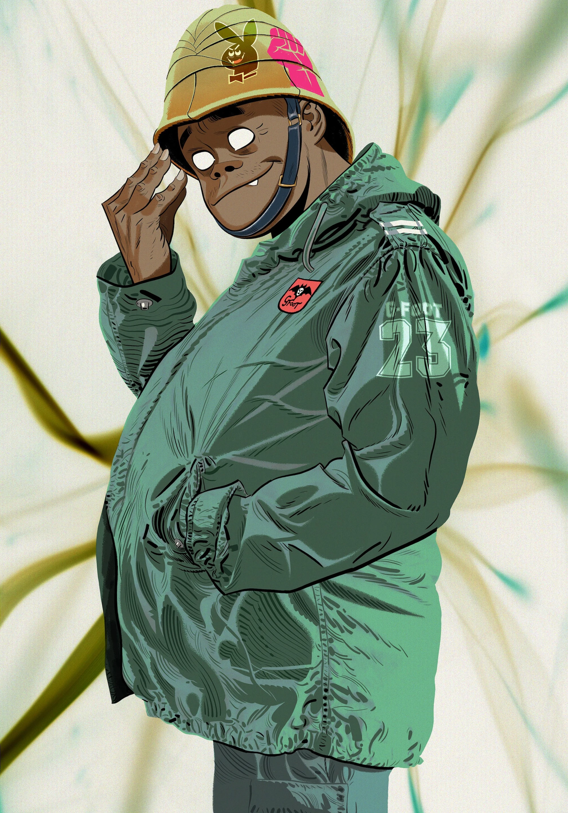

Russel Hobbs
Russel Hobbs fue concebido originalmente por Jamie Hewlett y Damon Albarn en 1998 como una representación metaficcional de los aspectos de hip hop de Gorillaz, encarnando el espíritu de las colaboraciones de la banda con varios raperos a lo largo de los años. Se hace referencia a él en la letra de la canción de Gorillaz "Clint Eastwood". Inicialmente, Hewlett se inspiró en su amor por artistas de hip hop como Ice Cube (primo del rapero Del the Funky Homosapien, quien rapea en "Clint Eastwood" y "Rock The House" como Del the Ghost Rapper).
Russel Hobbs fue concebido originalmente por Jamie Hewlett y Damon Albarn en 1998 como una representación metaficcional de los aspectos de hip hop de Gorillaz, encarnando el espíritu de las colaboraciones de la banda con varios raperos a lo largo de los años. Se hace referencia a él en la letra de la canción de Gorillaz "Clint Eastwood". Inicialmente, Hewlett se inspiró en su amor por artistas de hip hop como Ice Cube (primo del rapero Del the Funky Homosapien, quien rapea en "Clint Eastwood" y "Rock The House" como Del the Ghost Rapper).
